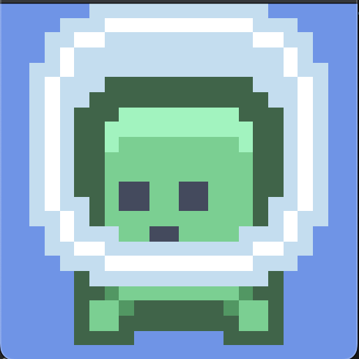

This is something that comes up allot for people who are making pixel platformers, or if you are writting a game which needs that pixel perfect look.
What is SamplerState
So what is a SamplerState? Well it controls they way the GPU uses the pixels from your textures when drawing sprites, 3D models etc. There are different techniques which produce different results. Depending on what the setting is, the GPU will either
- Use an exact pixel color
- Sample that pixel and a few around it and blend them in various ways.
So this setting can impact on how your game looks, but it will depend on what you are after. Sometimes blended textures make things look better.
So what are the SamplerStates?
When developing Co-operoids I wanted that nice crisp pixels for that old school arcade look. The out of the box experience for SpriteBatch will use the SamplerState.LinearClamp for texture sampling. For a particular sprite this is how that looks.
_spriteBatch.Begin();
_spriteBatch.Draw(_texture, viewport.TitleSafeArea, Color.White);
_spriteBatch.End();

Now this might well be ok for your game. There are certain times when this is actually what you need, maybe background sprites where a slight blur might help your main foreground pop a bit more.
If we pass SamplerState.PointClamp to SpriteBatch.Begin instead, we get this.
_spriteBatch.Begin(samplerState: SamplerState.PointClamp);
_spriteBatch.Draw(_texture, viewport.TitleSafeArea, Color.White);
_spriteBatch.End();

much better right? I think so too.
For completeness there is also SamplerState.AnisotropicClamp, which looks like this.

There are also Wrap versions of these Clamp states. The Wrap versions will wrap around to the other side of the texture when sampling from the edges, but the clamp do not.
This effects how the sprite will look at the edges.
These are all the outputs from the various states
| SamplerStates | ||
|---|---|---|
| PointClamp | LinearClamp | AnisotropicClamp |
| PointWrap | LinearWrap | AnisotropicWrap |

Also note that for the Wrap versions, we might also get some pixels from adjacent sprites if you are using a spritesheet.
Conclusion
So use SamplerState.PointClamp for your SpriteBatch to keep those sprites nice and crisp… if that is what you are after.